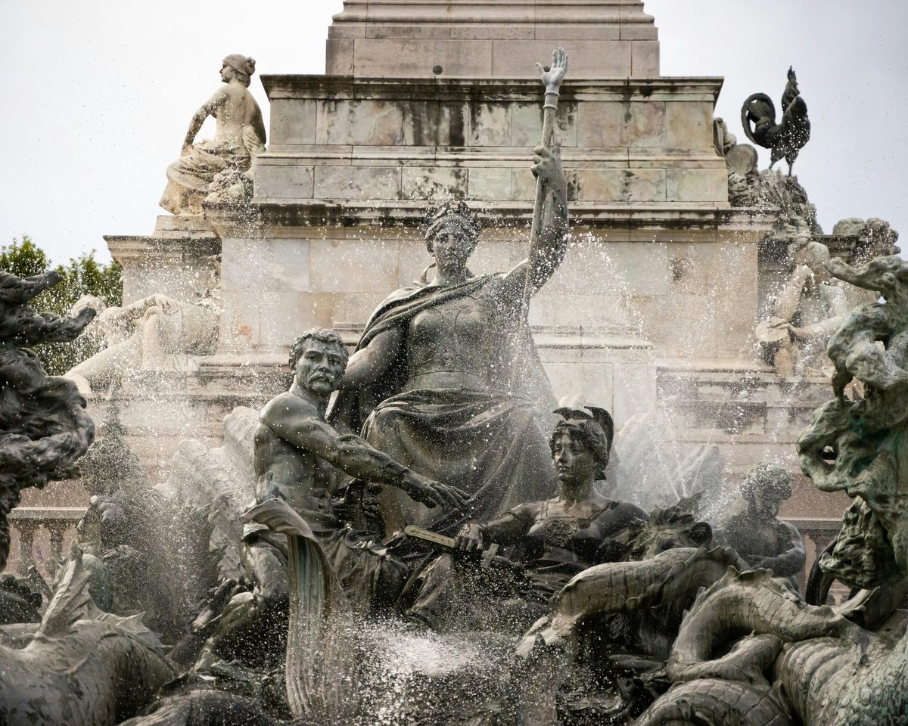

The Port of the Moon
Ten stops through a UNESCO World Heritage city. From the grandest square in France to a hidden 19th-century arcade built by Mexican merchants.
From the square built over a fortress to an arcade built by refugees. Ten stops, 3.3 kilometres, and six centuries of a city that has always known how to trade.
Leave a quick review. It helps other travellers find us and means a lot.
♥ Thank you so much. We'll read it and add it to the site shortly.
You've seen what this tour is like. The next 7 stops go further. €4.99, yours to keep forever.
Unlock Full Tour - €4.99Payments powered by Lemon Squeezy & Stripe